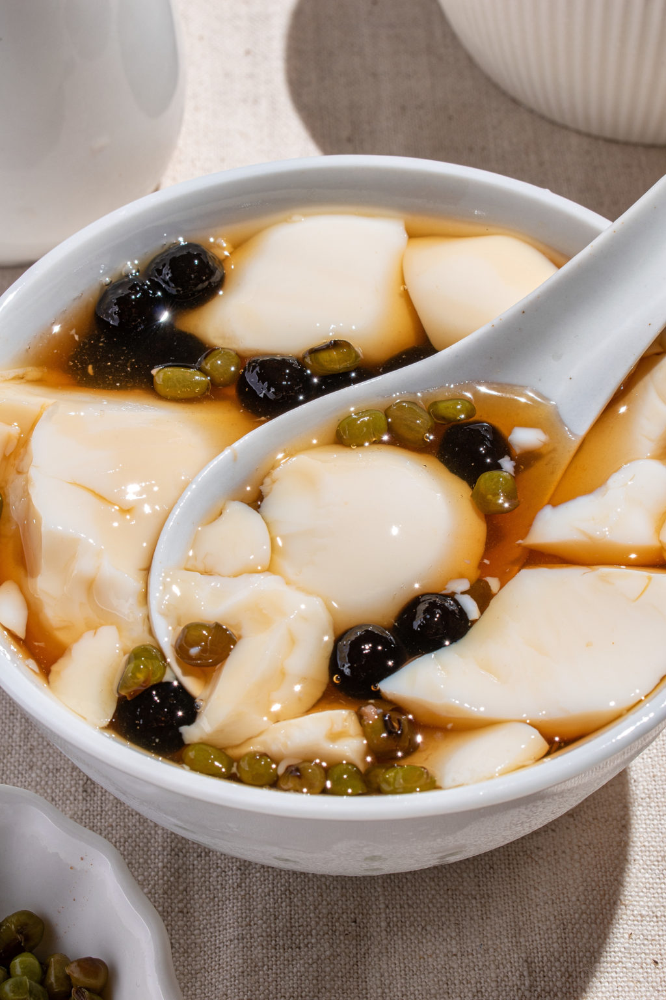
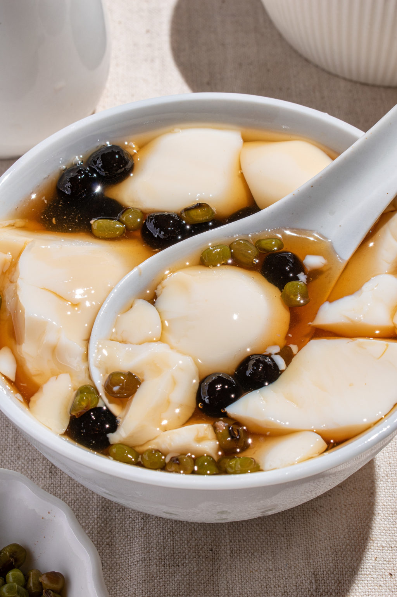

Reading and learning about the different types of dessert are pretty important, but a big part of food is how it is presented. Below are pictures of the desserts introduced.
As can be seen here, many flavour of this delicious drink are available other than the traditional black milk tea. The flavours here include: brown sugar, rose, and taro. (The third and fourth images included are not my own and are from Veggiekins and Sift & Simmer, respectively.)
Grass jelly is often served with milk and other popular toppings, such as red bean and taro balls. (Images are from Instagram.)
 

Douhua can be eaten in a similar way as grass jelly, wich allows more a lot of freedom in how you choose to eat this delicious treat. (Images are from Eric tries it)
The dough of the mochi is often colored to make them look prettier and more colorful. (Images are from tasteatlas)
Sometimes, the caramel is placed at the bottom, while other times it is poured over the top. (First picture is from Just One Cookbook, while the second one is from Tiffy Cooks)